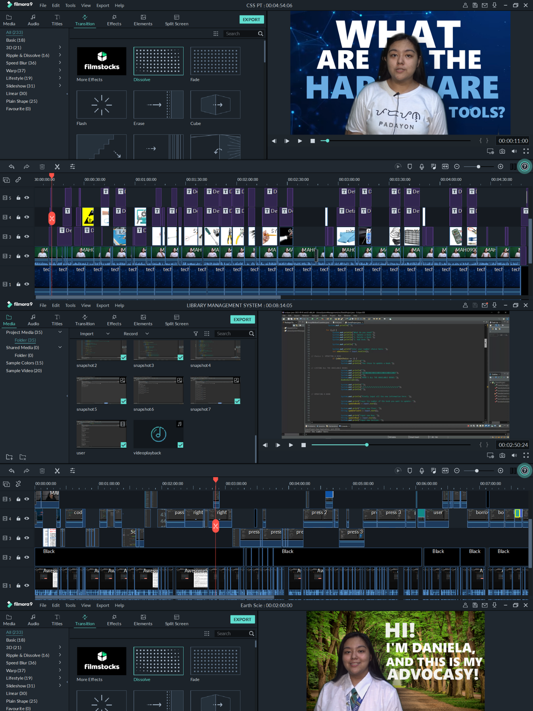

Objectives
barrandadaniela@gmail.com
Hello, I am Daniela Nicole Barranda, pursuing a Bachelor's Degree in Information Technology. I am eager to secure a role with a reputable organization to broaden my knowledge, gain experience, and earn. I am dedicated to developing the skills needed for such a position, focusing on professional growth and making significant contributions to the organization.
Batangas, Philippines
Santiago Malvar

Education
College
First Asia Institute of Technology and Humanities (FAITH)
Tanauan City, Batangas
College of Computing and Information Technology
Bachelor of Science in Information Technology
2023 - Present
Consistent Lister

Education
Senior High School
First Asia Institute of Technology and Humanities
FIDELIS SENIOR HIGH SCHOOL
Tanauan City, Batangas
Technical - Vocational - Livelihood Track:
Information and Communications Technology Strand
2021-2023
Class Secretary (2021-2022)
Class President (2022-2023)
With Honors (2021-2023)
Technical Skills
- Computer Hardware & Software Troubleshooting
- System Testing, Bug Identification & Fixing
- Version Control & Collaboration (Git, GitHub)
- UI/UX Design & Prototyping (Figma)
- Microsoft Office Suite & Google Workspace
- Web Development (HTML, CSS, JavaScript)
- Backend Development (ASP.NET, C#)
- Database Management (Microsoft SQL, MariaDB, Supabase, AWS:EC2)
- Cloud Deployment (Microsoft Azure, Vercel)
- Basic Java and C++
- AI-Assisted Development (ChatGPT, Claude)
- Canva
- Capcut
Professional Experience
Digital Literacy Volunteer
Aug 2023CLICK Program, FAITH Colleges — Tanauan City, Batangas
- Assisted barangay senior workers from Darasa, Tanauan, Batangas to use Microsoft Word, PowerPoint, and Gmail, translating technical concepts into accessible, practical instruction.
- Demonstrated patience, communication, and adaptability when working with non-technical users — skills directly applicable to team collaboration and task updates in a professional environment.
IT Support Intern (Work Immersion)
Jan 2023 - Feb 2023MIS Department, FAITH Colleges — Tanauan City, Batangas
- Completed 160 hours of hands-on IT support, troubleshooting hardware and software issues across classrooms, laboratories, and administrative offices — improving equipment uptime and reducing disruptions.
- Diagnosed and resolved system errors, software conflicts, and connectivity issues in computer labs and staff computers, applying systematic bug identification and fix processes.
- Assisted in preventive maintenance, computer assembly, Audio-Visual setup, and network troubleshooting — ensuring systems were ready and functional for daily school operations.
- Collaborated with the MIS team to prioritize and act on support requests during peak activity periods such as school events and examinations.
- Received Certificate of Completion.
Certifications
DICT Region IV-A · Apr 2024
Certificate of Attendance
CALABARZON Cybersecurity Caravan
DICT Region IV-A · Apr 2024
Certificate of Participation
DSDAP Caravan
DICT Region IV-A · Apr 2024
Certificate of Participation
EGOVPh Orientation

SoloLearn · Self-directed
HTML Certificate
Mobile App — Web Development Learning

FAITH Colleges MIS Dept. · Feb 2023
Certificate of Completion
IT Support Intern — Work Immersion
Hobbies
Outside of coursework and projects, I enjoy documenting everyday moments through photography and videography — a habit that doubles as hands-on practice with the same editing tools I use professionally, Canva and CapCut. I like refining raw footage into something clean and presentable before sharing it, which keeps my eye for detail sharp.
When I'm not creating, I recharge with a good show, an iced coffee, or catching up with close friends and family over food — small rituals that help me stay balanced and bring fresh energy back to my work.

